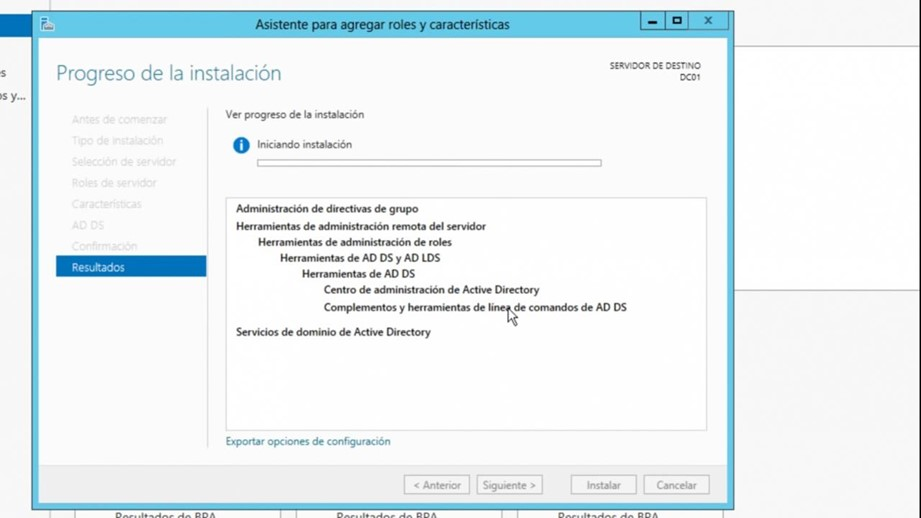
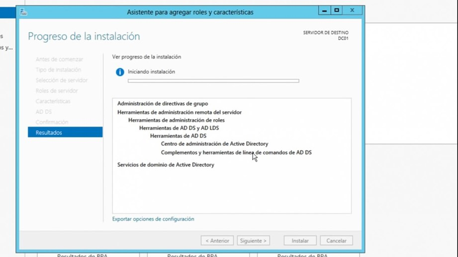
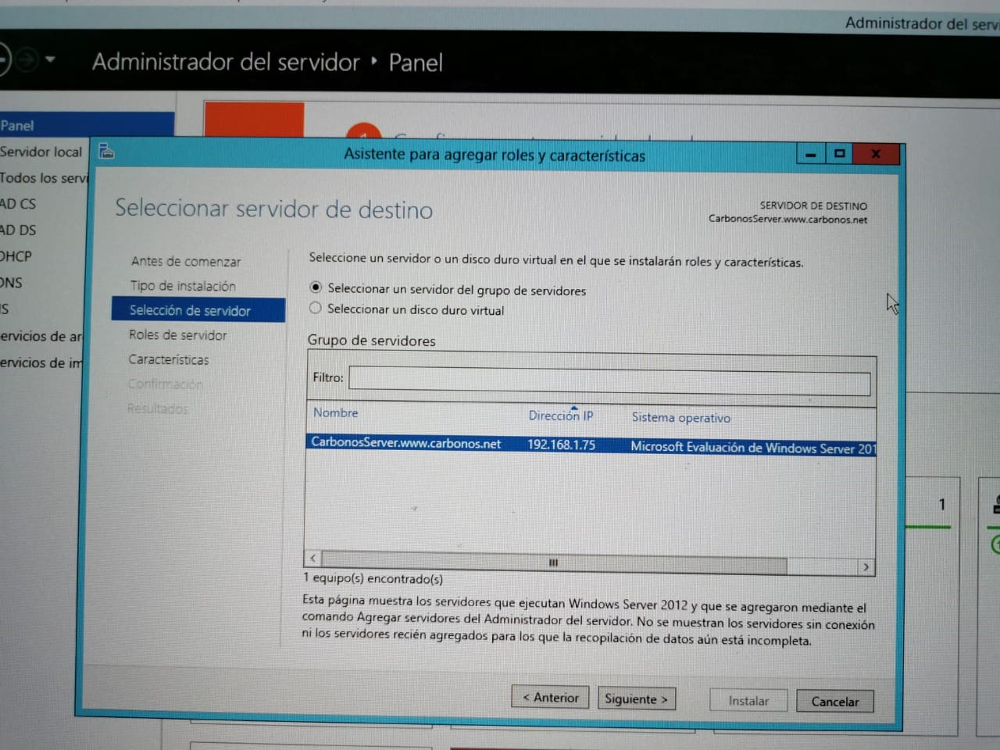
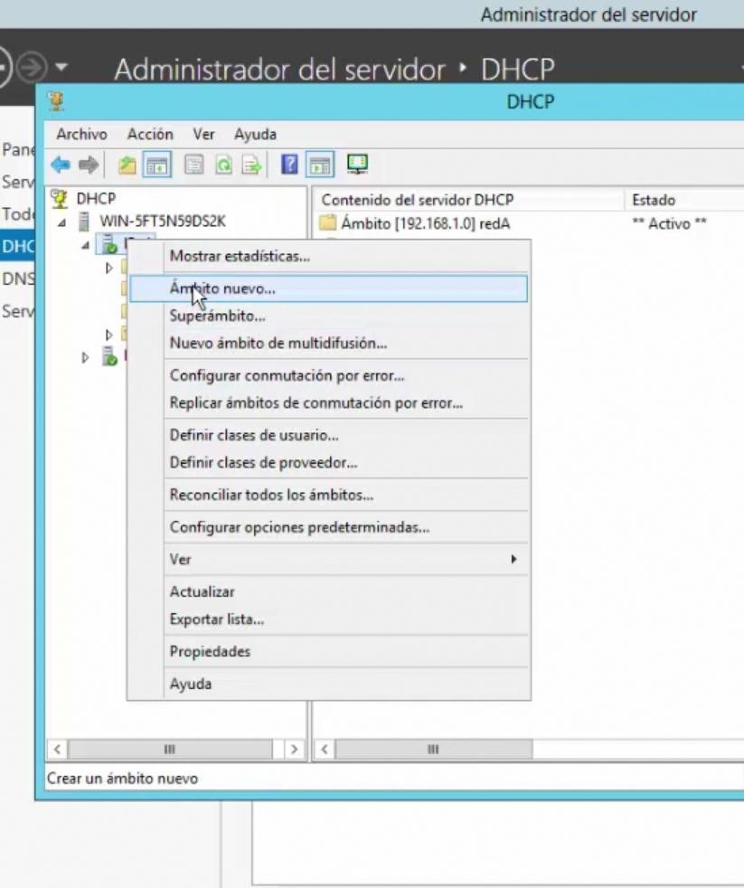
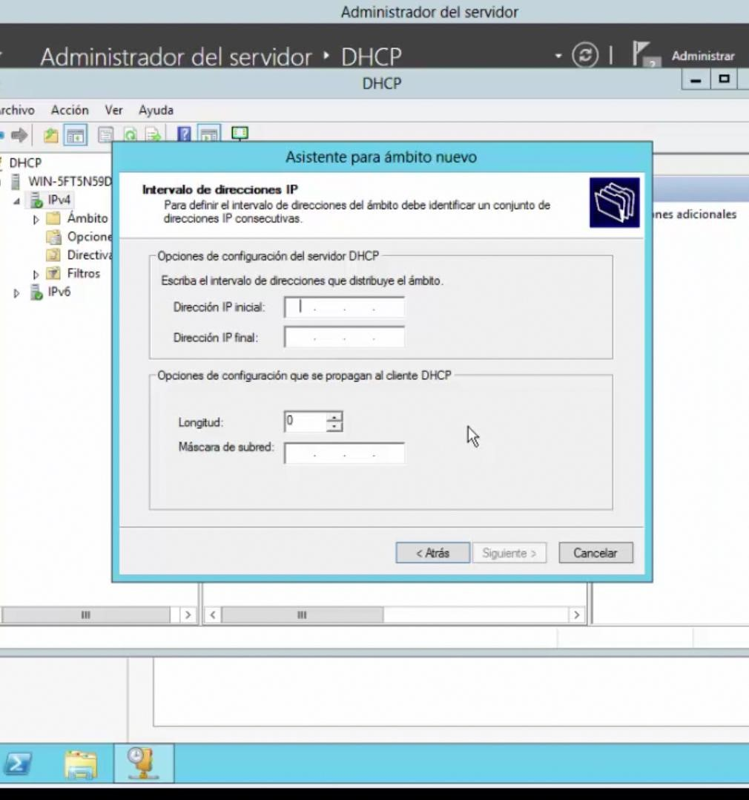
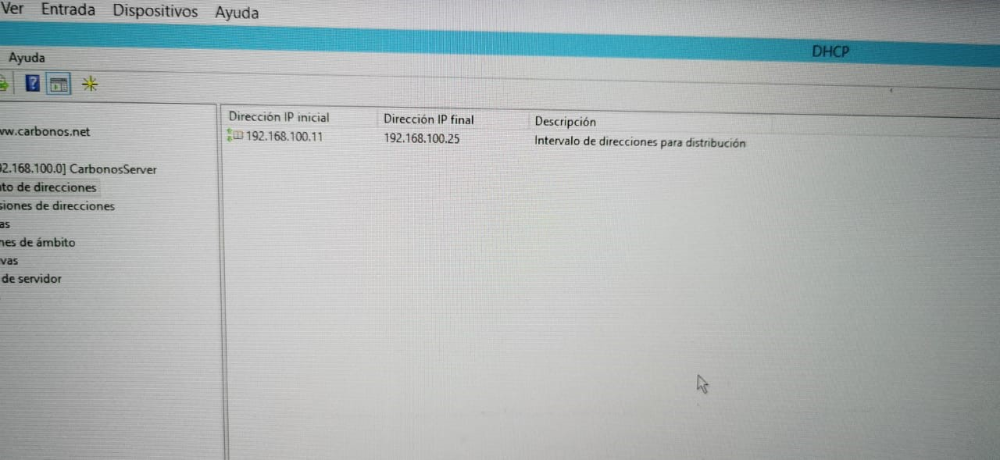
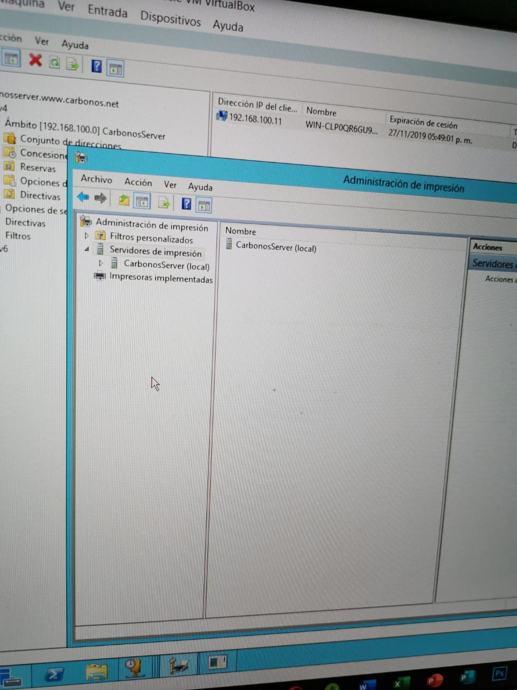
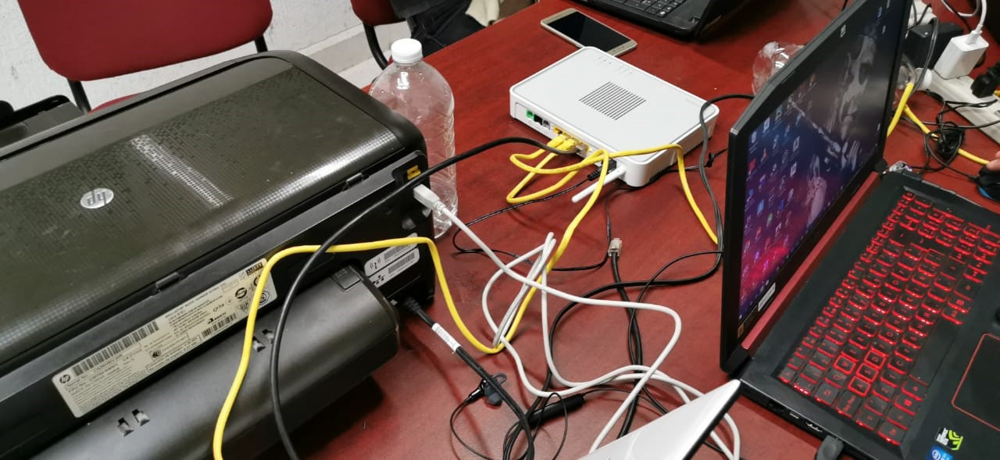

|
|
|
1-Activamos el active directory 

2-Se crea la contraseña para ingresar al dominio3-Creamos el dominio
4-Quedaría de esta manera
5-A continuación, se crea un nuevo ámbito, siguiendo al asistente, asignamos una dirección IP inicial y final que empieza en: 192.168.100.11 y termina en 192.168.100.25   
6-Configuración de la impresora, el driver fue instalado con el disco de instalación que trae la impresora | |